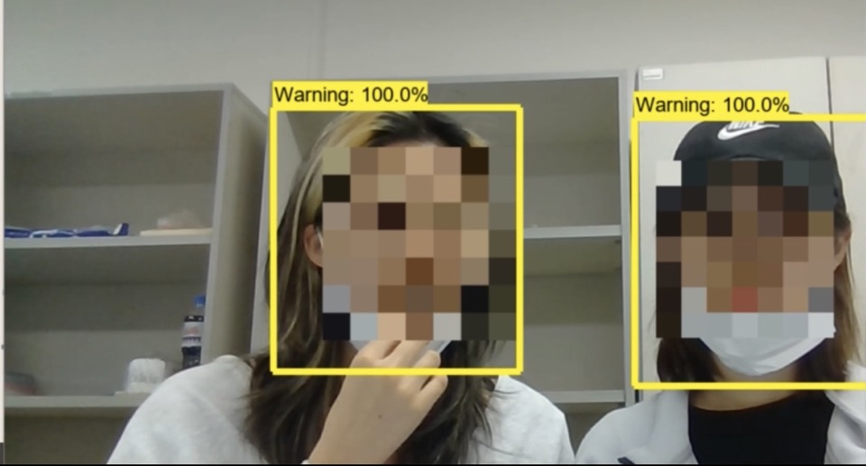
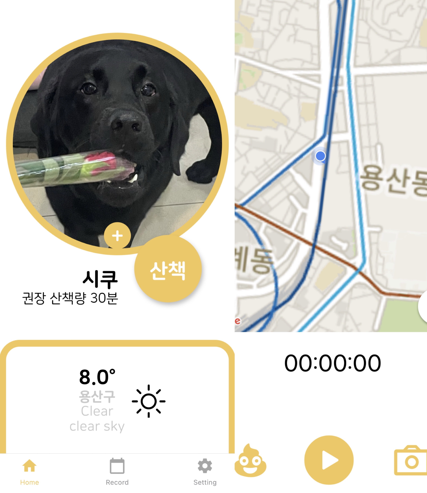

2020.12 My First Project
Face Mask Detection

- -간단한 소개-
코로나 초기에 마스크의 중요성을 위해 마스크를 착용한 사람들과 착용하지 않은 사람들을
구분하기 위한 openCV 프로그램 입니다.
- -사용 기술-
openCV, Spider, GoogleColab
2020.12 My Second Project
방탈출
- -간단한 소개-
방탈출을 할 수 있는 게임입니다. 또한 민족 독립을 주제로 하여 게임을 하며 얻는
아이템을 통해 역사공부도 할 수 있게 만들었습니다.
- -사용 기술-
Unity
Github Link
2021.09~ My Third Project
강아지 산책 어플

- -간단한 소개-
강아지 산책을 일정하게 관리 할 수 있는 어플입니다. 현재 개발 진행중입니다.
- -사용 기술-
ReactNative(Expo), Spring